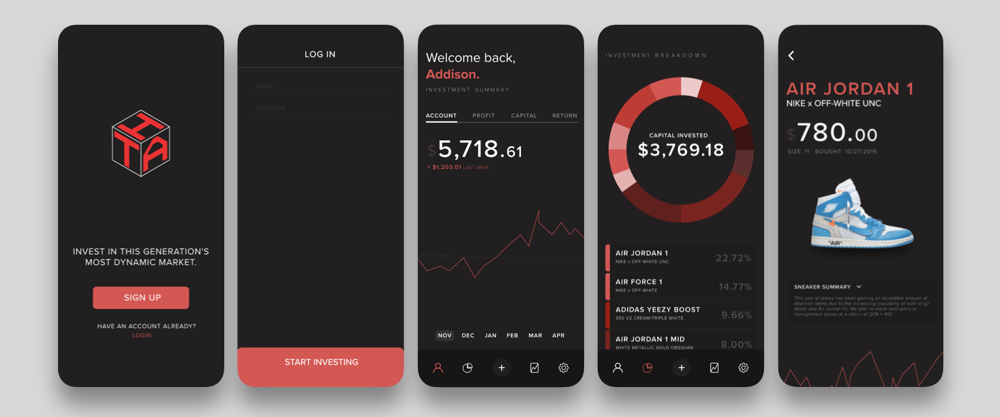

Bhavaani's Handlooms Marketing + Design
Graphic Design/Content Creation · Bhavaani's Handlooms · January 2019
Bhavaani's Handlooms is an ethnic Indianwear company based out of Austin, TX. Services include custom clothing design and brochure/stationary design (for Indian festivities such as weddings and Arangetrams). As a part of the team, I create marketing materials/graphics, and design brochures/stationary according to the client's request. Often, clients go through 6-7 iterations of the design before the confirm it is ready for print, at which point I carefully select the type/texture of cardstock and style of printing that would pair well with the design.
Key Responsibilites
- Taking/editing merchandise/branding photos
- Maintaining brand image throughout all forms of social media and marketing including selling posts, price tags/shopping bags, etc.
- Designing virtual receipts for internal/client after a purchase.
- Consulting clients and working with them in multiple sessions to produce their desired brochure/stationary. Includes providing several mockups, print samples, etc.
- Providing design sketches for new clothing design ideas, color palettes, etc.
Skills Involved:
Initial Wireframe

The main goal of this project was to show a clean user interface design, with some semblance to other investing apps like Robinhood. Detailing segues and button interactions before actually implementing them in the MVP is helpful in expediting the process, since the whole application is basically drafted/mapped before creation. Hand drawing the initial wireframe is a quick and dirtty way to "take notes" of ideas the client has during a client consultancy meeting, making it easy to then translate it to the interactive prototype.
Interactive Wireframe